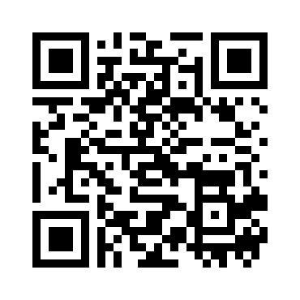

Omniutil est une passerelle universelle basée sur QR code, conçue pour connecter partenaires, services et humains au sein d’un écosystème numérique global.
Scannez le QR code ci-dessous pour entrer dans l’univers Omniutil :
Chaque scan est une porte d’entrée vers des opportunités, des collaborations et des interactions intelligentes.